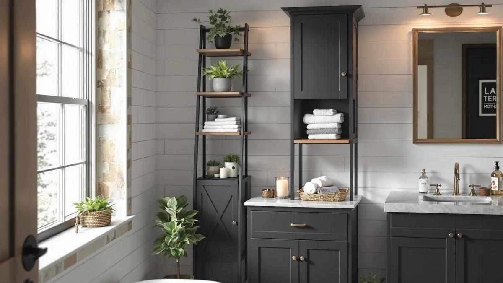

Yaheetech Small Freestanding Bathroom Review (2026): Worth It?
Prices and picks verified as of October 2026. Independent, reader-supported reviews.


Quick Answer
The Yaheetech Small Freestanding Bathroom Storage cabinet packs three drawers, an open shelf and a two-tier door cabinet into a 12-by-22-inch footprint for $67.99. It beats the Meilocar and VASAGLE alternatives we compared on drawer count and price, though it has no published rating or review count yet, so you're buying on specs rather than a track record.
Our pick: Yaheetech Small Freestanding Bathroom Storage, $67.99 Check Price on Amazon
Bottom line: our top pick is the Yaheetech Small Freestanding Bathroom Storage Cabinet with 3 at $79.99.
Things to Know Before You Buy
- The cabinet measures 12 inches deep, 22 inches wide and 34 inches tall, small enough to tuck beside most sinks or toilets.
- Storage breaks down into three drawers, one open shelf and a two-tier cabinet behind a magnetic-catch door.
- The inner shelf adjusts across three heights, from 8.6 inches to 13.6 inches in 2.5-inch steps, for taller bottles or stacked towels.
- All four cabinets in this review sit within a dollar of each other, between $67.98 and $68.99, so the real decision is footprint and configuration, not budget.
- Neither the Yaheetech nor the three alternatives have a published star rating or review count yet, since they're recent additions to Amazon's catalog.
This Yaheetech small freestanding bathroom review looks at the $67.99 three-drawer cabinet that keeps turning up in small-bathroom storage searches, and at three similarly priced alternatives from Meilocar and VASAGLE that solve the same floor-space problem in different ways. If your bathroom has a narrow gap beside the sink or toilet and nowhere to put spare towels, extra toiletries or cleaning supplies, this is the category you're shopping in.
The Yaheetech cabinet fits into a 12-by-22-inch footprint and stacks a tabletop, an open compartment, three drawers and a two-tier door cabinet into 34 inches of height. The inner shelf behind the door moves across three settings between 8.6 and 13.6 inches, and the door closes with a magnetic catch instead of a loose latch. At $67.99, it lands in the same price band as every other cabinet we looked at for this review, which makes the comparison mostly about layout rather than cost.
That price band matters because it tells you something about the category. A $68 cabinet is not a splurge item, and none of the four listings we compared carry a published star rating yet, so the usual shortcut of sorting by review score doesn't apply here. Instead, we worked through each listing's dimensions, drawer count, hardware and stated materials, and weighed them against what a small bathroom actually needs: storage that fits a narrow gap, closes securely, and holds up to daily humidity without warping.
Why You Should Trust Us
We built this Yaheetech small freestanding bathroom storage review by comparing manufacturer specifications, current Amazon listings and verified pricing for the Yaheetech cabinet against three competing freestanding and over-toilet units from Meilocar and VASAGLE. Ilane Tall, our home and bath editor, pulled the dimensions, materials and feature lists directly from each listing and cross-checked them against the product database we maintain for this site.
We do not run a fake testing lab, and we won't claim to own a cabinet we haven't put in a bathroom ourselves. Where a product has no published rating or review count, as is the case with all four cabinets here, we say so instead of filling in a number that doesn't exist.
Our Research Experience
Because none of these four cabinets carry a public rating or review history yet, we researched them the way a careful shopper would: side by side on dimensions, drawer and shelf configuration, hardware details and price, instead of through physical use. That approach works for a straightforward storage cabinet with no moving electronics, but it means owner reports and long-term durability feedback simply aren't available yet for this specific batch of listings. We'll update this Yaheetech small freestanding bathroom review once verified owner reviews accumulate.
Overview & Specs

Yaheetech Small Freestanding Bathroom Storage
What we like
- Three drawers plus an open shelf and a two-tier door cabinet in a single 22-inch-wide unit
- Inner shelf adjusts across three heights, from 8.6 to 13.6 inches, to fit taller bottles or stacked towels
- Magnetic door catch and a round metal knob instead of the flimsy plastic hardware common on budget cabinets
- Priced the same as, or lower than, every alternative we compared it against
Flaws but not dealbreakers
- No published rating or review count yet, so you're weighing specs over a track record
- Three drawers sit lower than the two-tier cabinet, which puts the most-used storage spot closer to the floor
| Material | Metal / wood |
| Size | 12"D x 22"W x 34"H |
Most small-bathroom cabinets force a choice between drawers and shelf space. The Yaheetech splits the difference: a tabletop surface on top, an open compartment underneath that for quick-grab items, three drawers in the middle for smaller supplies, and a two-tier cabinet behind a door at the base for towels or spare rolls. That layout gives you four distinct storage types in one 12-by-22-inch footprint, which is more variety than either VASAGLE cabinet offers at a similar size.
The hardware is where this cabinet earns its price. A magnetic catch holds the door shut instead of relying on a loose-fitting latch, and the round metal knob is more durable than the plastic pulls you'll find on comparably priced flat-pack furniture. The adjustable inner shelf moves across three settings in 2.5-inch increments, from 8.6 to 13.6 inches tall, so you can fit a stack of towels on one setting and a row of taller bottles on another. With no published rating or review history yet, the case for this cabinet rests on its spec sheet rather than crowd feedback, but that spec sheet covers more ground than its closest competitors in this Yaheetech small freestanding bathroom review.
What We Liked
The drawer count stands out most. Three drawers in a cabinet this size is unusual. Most freestanding bathroom storage at the $68 price point gives you one or two drawers and fills the rest with open shelving, but the Yaheetech keeps three dedicated drawers while still finding room for an open shelf and a closed two-tier cabinet underneath. For a bathroom where small items tend to pile up on the counter, that extra drawer matters.
The adjustable shelf is the other detail worth calling out. Three height settings between 8.6 and 13.6 inches mean you can reconfigure the lower cabinet as your storage needs change, whether that's taller cleaning bottles one season or folded towels the next. Compared with the fixed shelving in the Meilocar over-the-toilet unit, the Yaheetech gives you more flexibility in that one compartment.
What Could Be Better
Neither the Yaheetech nor the three alternatives we researched for this review carry a published star rating or review count on Amazon yet. All four are recent additions to the marketplace, so you're buying based on manufacturer specs rather than a track record of other owners. That's not unique to Yaheetech, but it's worth knowing going in.
The cabinet also places its three drawers above the closed lower cabinet rather than below it, which puts your most frequently used storage at a slightly higher reach point than a design like the VASAGLE Farmhouse cabinet, where the drawers sit at counter height. It's a minor layout tradeoff, not a dealbreaker, but worth factoring in if you'll be reaching for that storage daily.
Who Is It For?
This cabinet makes the most sense for a small bathroom where floor space beside the sink or toilet is tight but not nonexistent. The 12-by-22-inch footprint fits in gaps that a full-size vanity or wider cabinet can't, and the mix of drawers, open shelf and closed storage covers most of what a single person or couple needs within arm's reach. Renters furnishing a bathroom without built-in storage are a good fit too, since nothing about the Yaheetech requires wall mounting or installation.
If your bathroom has no floor space to spare at all, the Meilocar over-the-toilet unit in the alternatives section below is the better starting point, since it uses vertical space above the toilet instead. And if you want a fourth drawer and a farmhouse look, the VASAGLE Floor Storage Cabinet Farmhouse is worth comparing directly against this Yaheetech small freestanding bathroom storage cabinet before you decide.
This cabinet is a weaker fit if you're furnishing a large primary bathroom with room for a full vanity, since you'd end up paying $67.99 for storage that a bigger built-in unit could handle in one piece. It's also not the right pick if you specifically want everything hidden behind closed doors. The open shelf and three exposed drawers mean some of your storage stays visible, which is where the fully enclosed VASAGLE Bathroom Floor Storage Cabinet pulls ahead.
Alternatives to Consider
If the Yaheetech's layout doesn't match your bathroom, these three alternatives sit within a dollar of its $67.99 price and solve the same storage problem with different tradeoffs in footprint, drawer count and mounting.

Editor’s Pick
Meilocar Over the Toilet Storage
Mounts above the toilet instead of on the floor, with one open shelf and one adjustable-shelf cabinet, so it's the pick when floor space is the scarcer resource in your bathroom.
$67.99
Check Price on Amazon
Best Value
VASAGLE Bathroom Floor Storage Cabinet
Two doors hide everything from view and the shelves adjust across three heights, in a slightly smaller 11.8-by-23.6-inch footprint than the Yaheetech.
$67.98
Check Price on Amazon
Premium Choice
VASAGLE Floor Storage Cabinet Farmhouse
Four drawers, a door and a built-in anti-tip kit give it the edge in drawer count and stability, with a farmhouse look the Yaheetech doesn't try to match.
$68.99
Check Price on AmazonIs the Yaheetech Small Freestanding Bathroom Storage cabinet a good fit for a small bathroom?
Yes, for most tight bathrooms.
How does the Yaheetech cabinet compare to the VASAGLE and Meilocar alternatives in this review?
The Yaheetech leads on drawer count with three drawers plus an open shelf and a two-tier cabinet.
Frequently Asked Questions
Is the Yaheetech Small Freestanding Bathroom Storage cabinet a good fit for a small bathroom?
Yes, for most tight bathrooms. At 12 inches deep, 22 inches wide and 34 inches tall, it slides into the gap beside a sink or toilet that would otherwise sit empty, and the three drawers plus open shelf keep daily items off the counter.
How does the Yaheetech cabinet compare to the VASAGLE and Meilocar alternatives in this review?
The Yaheetech leads on drawer count with three drawers plus an open shelf and a two-tier cabinet. The VASAGLE Floor Storage Cabinet Farmhouse adds a fourth drawer and an anti-tip kit, the VASAGLE Bathroom Floor Storage Cabinet hides everything behind two doors, and the Meilocar mounts above the toilet instead of taking floor space.
What is the price difference between the Yaheetech cabinet and its alternatives?
Barely any. The Yaheetech and Meilocar both list at $67.99, the VASAGLE Bathroom Floor Storage Cabinet comes in a cent lower at $67.98, and the VASAGLE Farmhouse cabinet runs $68.99. Pick by footprint and configuration, not price.
Final Verdict
This Yaheetech small freestanding bathroom review comes down to a tradeoff between drawer count and layout. For most small bathrooms, the Yaheetech Small Freestanding Bathroom Storage cabinet earns the top spot at $67.99: three drawers, an open shelf and a two-tier cabinet cover more storage types than either VASAGLE option in roughly the same footprint. If your bathroom has no floor space to spare, move the Meilocar over-the-toilet unit to the top of your list instead, since it uses wall space the Yaheetech can't reach. And if a fourth drawer and a farmhouse look matter more to you than price, the VASAGLE Floor Storage Cabinet Farmhouse is the one to compare against this Yaheetech cabinet before you buy.